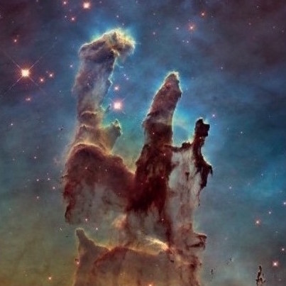
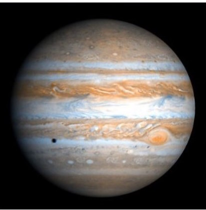

The Importance of Astronomy
by: Carson Kurad
Humankind was born on Earth, a lone planet amidst a sea of stars. As such, it seems obvious that we would set our gaze on the stars since the beginning of civilization. We've come a long way since then; we can explain why the stars exist and why they are the way the are. I can picture our ancestors sitting around fires on a dark night, starstruck by the light and colors of our galaxy shining from above; we are still fascinated by the universe today. This fascination hasn't always benefitted us, but its existence is undeniable. It has driven us to accomplish incredible things, as well as make immense advances in our society.
 The cosmos tears us apart sometimes, but it always binds us together in the end. The Space Race in the Cold War nearly destroyed two powerful nations, all over the opportunity to send a human to the moon. In this way, astronomy created a time of fear and tension, but it is definitely much more than that. Astronomy is a symbol of peace, of the greater good of humanity. The International Space Station was a collaboration between many countries that put aside their differences for the single collective goal of increasing our knowledge of the universe. In fact, Russia and the United States were major contributors to the space station, in a way burying the hatchet for their conflict in the Cold War. Somehow, a single project for astronomy has united many powerful nations, all as a result of our collective enchantment with the sky.
As well as affecting global events, astronomy influences our culture as a whole. Movies like Star Wars and books like Ender's Game have created different lines of thought that all point skyward. Each cultural phenomenon is a clear depiction of cosmic fascination in our society. The cultural celestial fascination particularly manifested in a British composer named Gustav Holst. In the twentieth century, Holst wrote a work of music called The Planets. Each movement in the work is dedicated to one planet in the solar system. Using stories from Greco-Roman mythology, each planet is given music with a tone that mirrors the planet's corresponding Roman god. For example, Venus was the goddess of beauty, so the movement about Venus is made up of majestic and graceful notes. In his work, Gustav Holst created an magnificent homage to Earth's celestial neighbors.
While our ancestors watched the sky with only their naked eyes, we have developed incredible machines to satisfy our thirst for cosmic beauty. The Hubble Space Telescope has captured amazing images of the space beyond our line of sight; the spellbinding photographs have captured the imaginations of millions of people, as well as providing essential information about deep space. In addition, the technology used to build Hubble has been repurposed for other uses; for example, the method used to process Hubble images has also been used to detect signs of breast cancer. In short, our endeavor to satisfy our fascination for space has led to great improvements in our society.
While Hubble gazes at far-flung galaxies and wild places far away, other machines also explore the universe on behalf of mankind. One such explorer, fittingly named Curiosity, currently roves of the surface of Mars, beaming back breathtaking panoramas of vistas and plains never before seen to human eyes, as well as critical information about Mars itself. Other cosmic wanderers fly above the scenes, hurtling through the space while orbiting planets. They take brilliant photos of interplanetary skylines and allude to the mysteries of the outer planets and their moons.
Ancient cultures have gone as far as to work astronomy into their religions. The ancient Egyptians believed that solar eclipses happened as a result of the chaos snake Apophis trying to eat the sun; clearly, he never got his way, but it's ironic that a myth of the god of chaos involves an event that astronomical equations can consistently and reliably predict. Additionally, the ancient Greeks thought that constellations were ways that the gods honored the achievements of great heroes. The Native Americans believed that the Pleiades star cluster used to be seven human maidens who jumped onto a rock in order to save them, and the rock responded by rising up and placing the maidens in the sky as stars. The Devil's Tower rock formation in Wyoming is supposedly the exact rock that lifted the maidens into the sky.
 Astronomy also gives us specific functional benefits. Stars play a major role in navigation, just as they have since ancient times. Polaris, the North Star, is revered as the celestial keystone of navigating, and its reliability in providing direction has proven invaluable for sailors. Today, man-made satellites orbiting our planet give us crucial information about access to water, impending environmental crises, and management of resources. Without this data, it would be a lot harder for us to fulfill our responsibilities here on Earth.
There is something special about the vastness of the universe, something that makes you feel extremely unique but also utterly insignificant. Earth is the only known planet with life on it in the universe, so we have a reason to think we are special. At the same time, there are countless planets in our galaxy alone, even more than every grain of sand on every beach in the world. In fact, scientists estimate that there are over 20 billion Earth-like planets in our galaxy. If you multiply that number by 500 billion, the estimated number of galaxies in the universe, it seems that there are over 10 sextillion planets like Earth in the universe; that's a 1 followed by 22 zeros. Although we think that there is nothing else like us, there is a mindbogglingly enormous number of worlds like ours. The greatest mystery humanity has ever faced is how we fit into the grand scheme of things, especially why we exist in such a vast universe. Even without the philosophical problems, one has to wonder how the universe actually works
The main takeaway about the universe is that it will always be there, and we can't do anything to change it. Because of this, the cosmos certainly deserves attention. It's one of the most tremendous enigmas out there, but its existence is a constant in a chaos we can never hope to fully comprehend. Nonetheless, we don't need to confuse ourselves with the philosophy of our surroundings. The proof is in the night sky: This is our home, and that will never change.
Bio
Carson Kurad is currently a freshman at St. Andrew's Upper School. He was born in San Francisco, California, and presently lives in Austin, Texas. He enjoys reading, running, and swimming, as well as sailing and photography. He is fascinated by astronomy and loves to learn information about space.